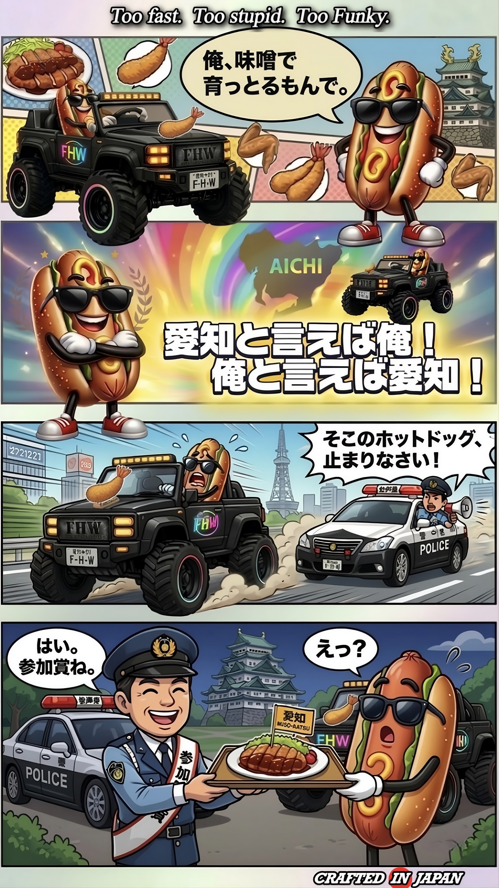
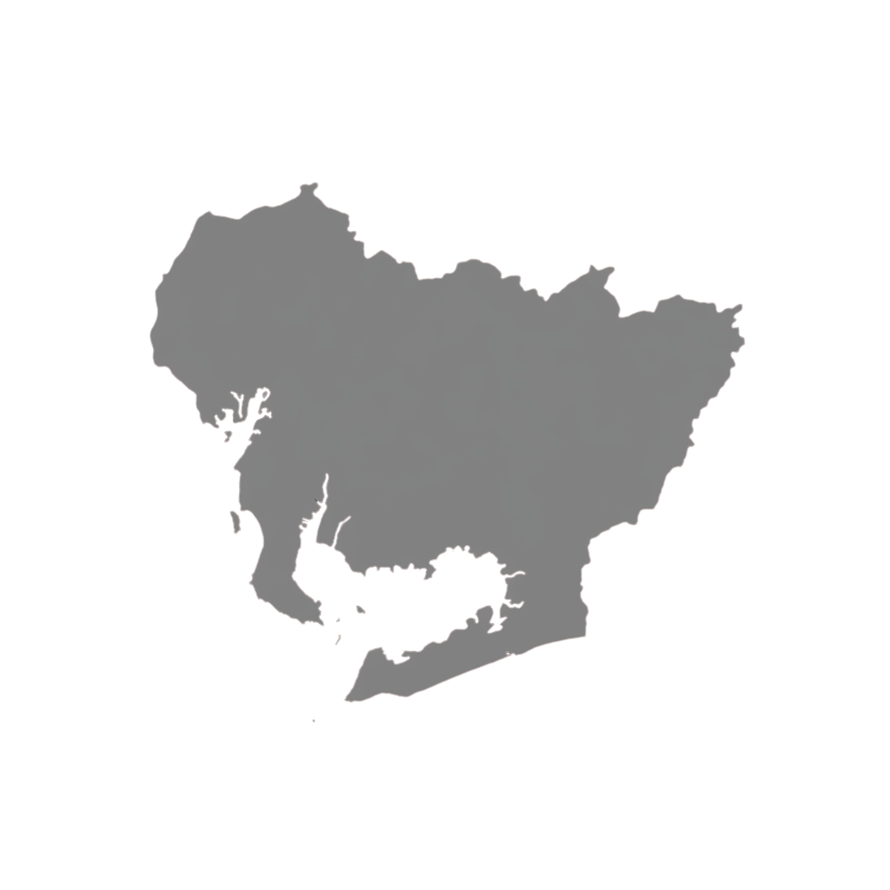
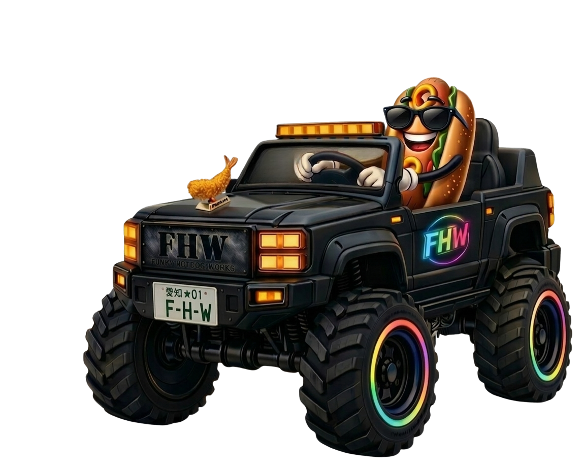

ORIGIN
OF
FHW

愛知 ★01
彼はレースが始まる前から
もう勝った気でいる。
スピードより先に、
自信だけがゴールしている。
もう勝った気でいる。
スピードより先に、
自信だけがゴールしている。
アクセルは全開。
頭の中は表彰台。
だが現実はーー
頭の中は表彰台。
だが現実はーー
パンダに乗ったイヌに追われる。
だがFHWでは、
そんなもんでは止まらない。
なぜなら彼は
そんなもんでは止まらない。
なぜなら彼は
味噌で育っとるもんで。
そしてこの街ではーー
暴走すると
参加賞がもらえる。
暴走すると
参加賞がもらえる。
愛知と言えば
味噌カツだて。
AICHI ★01
He thinks he's already won
before the race even starts.
In his world,
confidence crosses the finish line first.
before the race even starts.
In his world,
confidence crosses the finish line first.
Throttle wide open.
Podium already in his head.
But reality—
Podium already in his head.
But reality—
a dog in a panda car is chasing him.
But in FHW,
that's not enough to stop him.
Because he was
that's not enough to stop him.
Because he was
raised on miso.
And in this town—
when you go full throttle,
you still get a participation prize.
when you go full throttle,
you still get a participation prize.
Because in Aichi,
it's miso-katsu.
CRAFTED
IN
JAPAN

35.1850°N
136.8997°E
LOCAL ROOTS

AICHI
🇯🇵
JAPAN